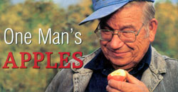

The air in 77-year-old Nick Botner's 7-acre Yoncalla, Oregon, orchard is redolent with the aroma of apples, a sweet-tart sensation guaranteed to make your mouth water in anticipation. Three thousand varieties in every hue, from the palest yellow to vivid green to a spectrum of reds and mixed-color creations, hang like succulent jewels from more than 6,000 trees.
Botner, a modern-day Johnny Appleseed, tends what he says is the largest private collection of apple varieties in the world. Visiting the orchard is a tantalizing journey through time, cultures and continents.
Jerry Schroyer of Canby, Oregon, past president of the Home Orchard Society, calls Botner "the Noah of the apple collecting world." Schroyer says, "He wanted to have one of everything and sought out unusual varieties. He has this urge to save every apple variety out there."
Botner's admiration for apples began when he was growing up in the old orchard region along the west side of the Hudson River in upstate New York. The family's small city lot didn't afford room for even one full-sized apple tree, but when little Nick was old enough, he started picking apples by the bushel for neighboring truck farmers. Botner recalls, "Apples were grown on big, old standard trees, and we had to climb huge ladders to pick the fruit." A popular variety of the day was 'Baldwin,' still one of his favorites.
FROM ALASKA TO APPLES
As an adult, Botner spent 28 years in Alaska, homesteading 20 acres and operating hunting and fishing lodges. There, he grew potatoes and grain, but with the timberline near, apples were out of the question. Then, he moved his family to Yoncalla, in the rolling hills of southern Oregon, and started planting many things he couldn't grow in Alaska-including 200 apple trees.
"They're such a versatile fruit," he says. "Apples store well, and you can dry them, cook them, sauce them, juice them, turn them into cider-things you can't do with lots of other fruit."
In 1979, after his oldest son, Tal, learned how to execute "whip-and-tongue" tree grafts in science class, Botner was inspired to start grafting apple trees himself.
He did 50 that year, and he joined the Home Orchard Society, where he acquired an abundance of scionwood for unusual and noncommercial varieties. Scions are dormant shoots of desired fruiting varieties used for grafting onto various rootstocks.
"At first I used to buy scions to build my collection," he says, "but then people started giving scions to me that I didn't have." He did some trading, too, and since then has distributed more than 1,500 varieties of apples in the form of scionwood and grafted trees to more than 10,000 growers around the world. By his reckoning, he's grafted more than 20,000 apple trees.
"Grafting is an economical way to get a tree," Botner says. "If I had to buy all the trees I have now, I couldn't find them, and even if I could, the cost would be prohibitive."
(If you wantto graft your own apple trees, scions are available from Botner at 4015 Eagle Valley Road, Yoncalla, OR 97499; (541) 849-2781; for $3.50 each ($14 minimum), plus shipping. Send a legal-sized SASE to him for a list.-MOTHER)
GROWING TRICKS
Two growing methods that Botner employs to use his orchard land as efficiently as possible are tight spacing and annual pruning. "Many folks still are trying to hold onto the concept that an apple tree has to be a big tree," he says. He spaces his smaller grafted trees 3 feet apart, which allows him to grow more varieties in the same area and get all the fruit he wants.
The tight spacing also works best for scion and evaluation purposes. To accommodate the spacing, Botner grafts his scions onto dwarf rootstock "M26" and "Mark," and prunes to a central leader. "A good height for today's apple tree," he says, "is anything you can reach with your loppers."
Lastly, he adds, "All your efforts to grow a great apple can get lost in the pits if you pick them before they're ripe." His advice on when to pick: "Simply cut one open. The seeds should be dark. Seeds that are white or any stage in-between mean the apple still needs time to fully develop and ripen."
Kris Wetherbee learned how to graft from Nick Botner. She and her husband, photographer Rick Wetherbee, maintain a 1-acre orchard in the rolling hills of western Oregon.
Mother Earth News
|
 Rick Wetherbee (2) Above: 'Liberty' apples are known for being trouble-free. Oregon orchardist Nick Botner says if he could grow only one variety, it would be 'Liberty.' |
|
|